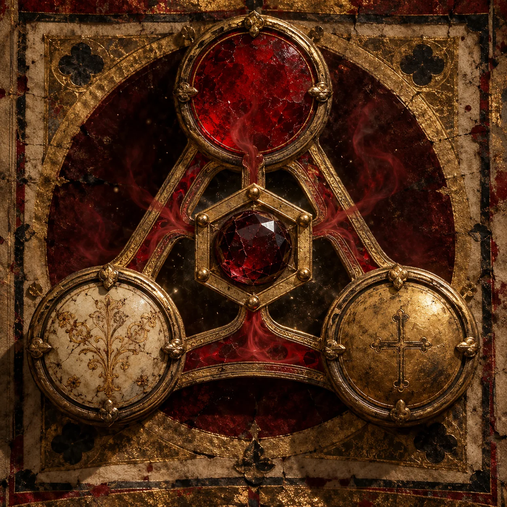
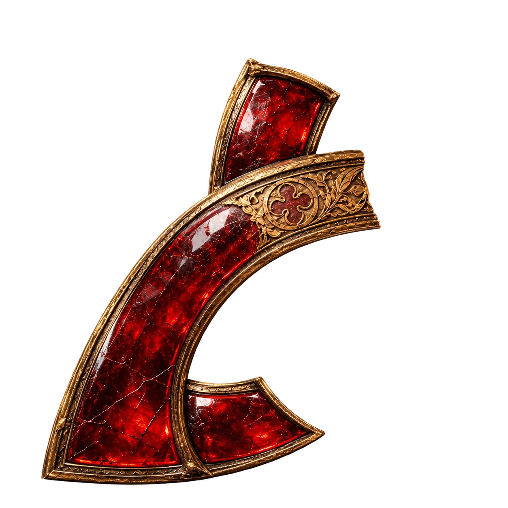
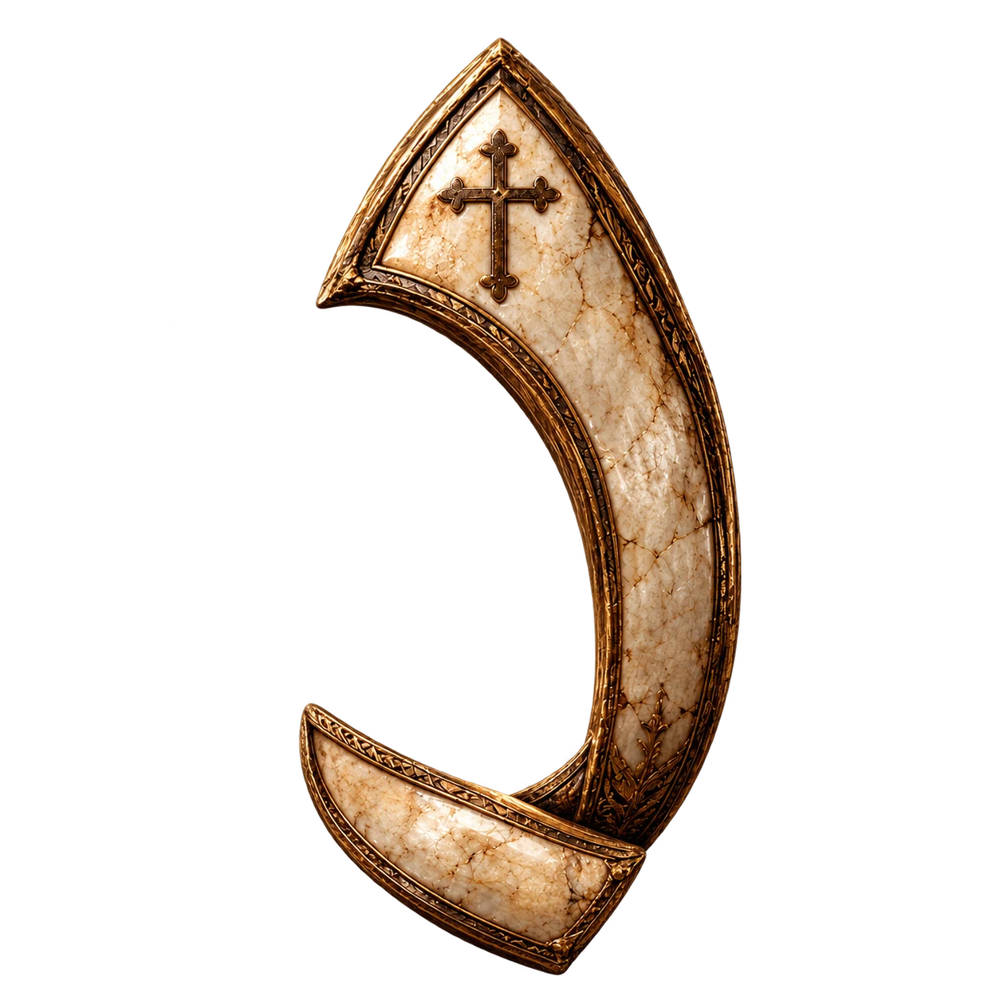
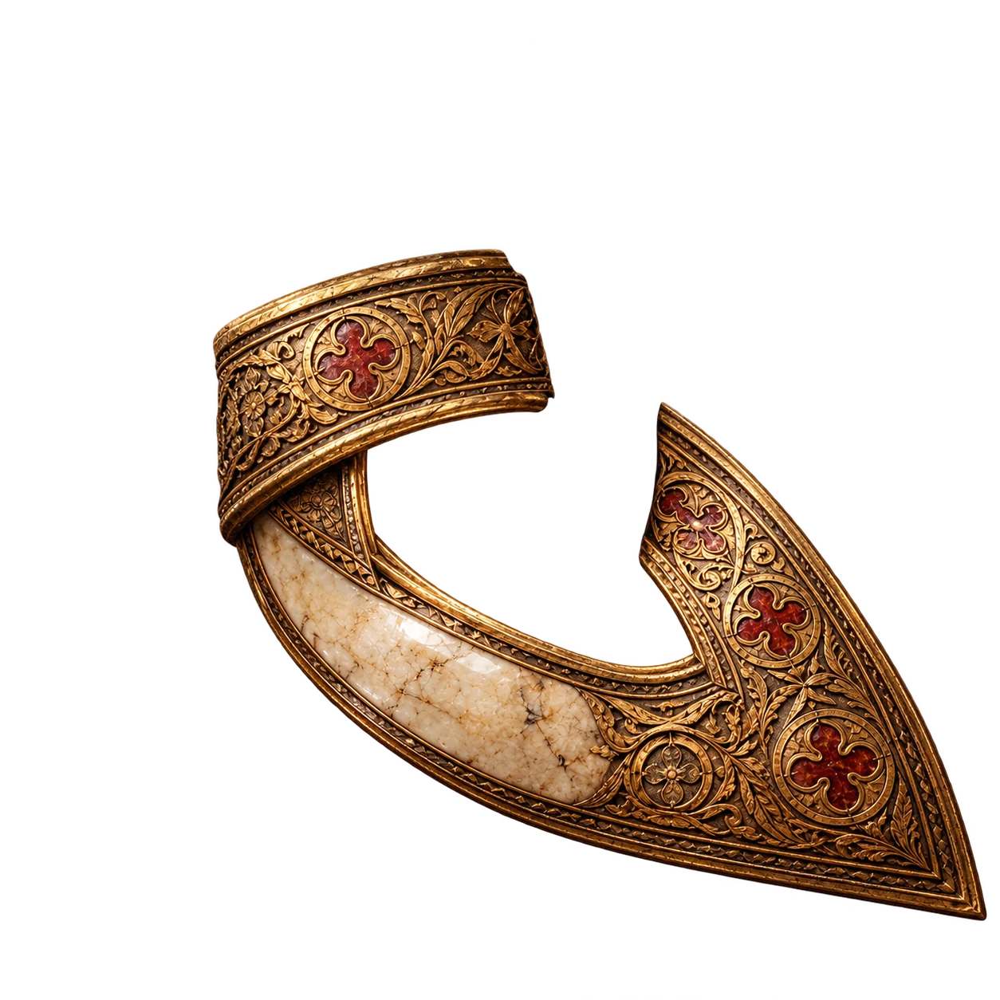
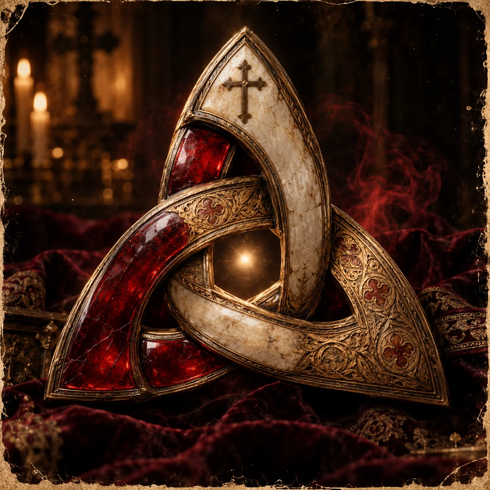

O selo reúne-se.

F FeticheE EducaçãoR Religião
Três medalhões separados encontram os seus lugares. Só quando chegam aos vértices se grava a aresta de ouro. O centro hexagonal abre por último.
- 01Os medalhões avançam com o peso de peças reais.
- 02O traço metálico une os três pontos.
- 03O selo fecha-se e a pedra vermelha ganha luz.
Scutum Fidei / estrutura histórica · FER / criação contemporânea
As bandas entrelaçam-se.




F DesejoE CapacidadeR Direção
Vermelho, marfim e ouro chegam por caminhos diferentes. As bandas rodam e passam umas pelas outras. A abertura no centro só existe quando a peça está inteira.
- 01As três bandas entram em tempos distintos.
- 02O metal abranda ao encaixar; a luz nasce na junção.
- 03A peça completa revela o núcleo.
Triquetra / três arcos entrelaçados · FER / três forças em união